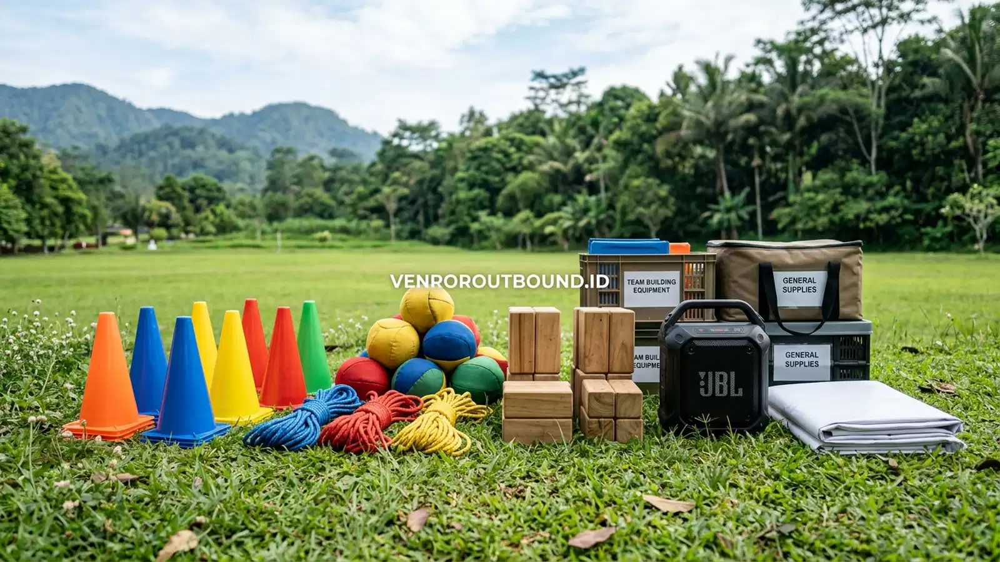

Apa Itu Paket Hemat Family Gathering?
Jawaban singkat: Paket hemat family gathering dapat menjadi pilihan bagi panitia yang ingin menyederhanakan persiapan acara dengan menggabungkan beberapa kebutuhan dalam satu perencanaan. Komponen seperti area kegiatan, fun games, fasilitator, dan banner dapat tercantum dalam penawaran sesuai paket yang dipilih. Karena isi paket dapat berubah berdasarkan kebutuhan dan kesepakatan, panitia sebaiknya meminta proposal terbaru sebelum melakukan pemesanan.
Merencanakan agenda temu keluarga besar, paguyuban famili trah leluhur, arisan keluarga dua bulanan, hingga gathering lingkungan rukun tetangga sering kali menghadirkan tantangan tersendiri bagi panitia yang ditunjuk. Keterbatasan waktu luang panitia, variasi usia peserta yang terbentang dari balita hingga lanjut usia, serta kepedulian terhadap efisiensi anggaran adalah realitas umum dalam setiap perencanaan acara non-korporat. Di sinilah konsep Paket Hemat Family Gathering hadir sebagai jalan keluar yang logis, praktis, dan terencana.
Secara mendasar, paket hemat gathering bukanlah upaya mengurangi esensi kebersamaan atau memangkas kualitas keselamatan acara. Pendekatan ini merupakan strategi pengemasan cerdas (smart bundling), di mana elemen-elemen paling esensial dalam sebuah perjumpaan outdoor disatukan secara efisien tanpa membebani panitia dengan tumpukan biaya overhead yang tidak perlu. Dengan memilih format paket yang tepat, panitia tidak perlu lagi berbelanja perlengkapan permainan secara eceran, menyewa sound system portabel terpisah, atau kebingungan menyusun rangkaian games yang dapat menyatukan berbagai generasi keluarga.
Wilayah pegunungan Batu dan Malang telah lama menjadi destinasi favorit untuk perhelatan temu keluarga di Jawa Timur. Suasana alam yang asri, pepohonan pinus yang rindang, serta hembusan angin sejuk memberikan latar alami yang menenangkan pikiran. Ketika atmosfer alam tersebut dipadukan dengan format kegiatan yang terarah dan menyenangkan, momen kumpul keluarga bertransformasi menjadi kenangan manis yang membekas di hati seluruh sanak saudara.
Siapa yang Cocok Menggunakan Paket Family Gathering Hemat?
Karakteristik paket hemat dirancang dengan fleksibilitas tinggi agar relevan bagi berbagai kelompok masyarakat yang mengutamakan suasana akrab, guyub, dan tidak kaku. Beberapa segmen yang sangat cocok memanfaatkan format ini antara lain:
- Keluarga Besar Lintas Generasi: Acara reuni trah kakek-nenek buyut yang mempertemukan paman, bibi, keponakan, dan cicit. Format ini memberikan wadah interaksi santai tanpa adanya tuntutan fisik yang melelahkan bagi generasi senior.
- Kelompok Arisan Keluarga & Sahabat: Paguyuban arisan yang ingin mengadakan sesi pengundian dengan suasana berbeda di luar rumah atau restoran biasa, memanfaatkan area rumput hijau untuk menghirup udara segar.
- Komunitas Hobi & Pegiat Lingkungan: Klub sepeda santai, komunitas pecinta fotografi, paguyuban otomotif santai, atau kelompok parenting yang ingin mengadakan temu tahunan dengan suasana rekreatif terjangkau.
- Paguyuban Rukun Warga & RT/RW: Pengurus rukun tetangga yang mengalokasikan kas warga untuk kegiatan rekreasi bersama, memupuk kerukunan antar tetangga dalam suasana non-formal.
Bagi kelompok-kelompok tersebut, fleksibilitas dan kenyamanan adalah prioritas utama. Mereka tidak memerlukan program outbound dengan instruksi militeristik yang ketat, melainkan ruang interaksi yang hangat, penuh tawa, dan memudahkan setiap orang untuk saling bercakap-cakap kembali setelah sekian lama terpisah oleh kesibukan masing-masing.
Komponen yang Perlu Diperiksa dalam Paket
Meskipun sebuah penawaran diberi label "paket hemat", panitia tetap berkewajiban untuk memeriksa rincian penawaran secara cermat dan mendalam. Setiap provider outbound maupun pengelola venue memiliki batasan fasilitas yang berbeda-beda. Mengetahui status setiap pos fasilitas sejak awal akan menghindarkan keluarga besar dari kesalahpahaman saat hari pelaksanaan di lapangan.
Berikut adalah tabel panduan komponen esensial yang wajib Anda periksa dan klarifikasi bersama penyedia layanan:
| Komponen Layanan | Status yang Perlu Dikonfirmasi Sebelum Booking |
|---|---|
| Area kegiatan | Lokasi pasti, kapasitas daya tampung lapangan rumput, serta privasi area dari pengunjung umum lainnya. |
| Fun games | Jumlah pos permainan (misalnya 4–5 variasi games) dan kesesuaian jenis permainan dengan usia peserta. |
| Fasilitator | Jumlah personil fasilitator yang bertugas, durasi pendampingan, dan gaya pembawaan acara keluarga. |
| Perlengkapan games | Kelayakan jenis peralatan (tali, cone, bola ringan, props kayu) dan aspek keamanan saat digunakan anak-anak. |
| Banner kegiatan | Ukuran fisik banner, penyusunan tata letak desain foto keluarga/logo komunitas, serta ketersediaan tiang pemasangan. |
| Konsumsi | Status apakah sudah termasuk (snack box, makan siang prasmanan) atau bersifat pilihan tambahan (opsional). |
| Dokumentasi | Ketersediaan fotografer kegiatan, format file foto/video yang diserahkan, serta durasi pengambilan gambar. |
| Sound system | Ketersediaan perangkat audio portabel (wireless mic, speaker outdoor) untuk memandu ice breaking. |
| Rundown acara | Alokasi durasi setiap sesi kegiatan, waktu istirahat, serta kelonggaran waktu untuk acara bebas keluarga. |
| Backup cuaca | Alternatif lokasi berteduh (pendopo aula semi-indoor) jika turun hujan tiba-tiba di kawasan pegunungan. |
Dengan memegang tabel checklist konfirmasi ini, panitia memiliki posisi tawar yang kuat dan kejelasan komprehensif atas apa saja yang berhak diterima di lapangan. Transparansi adalah pondasi utama terwujudnya acara keluarga yang bebas dari rasa cemas.
Contoh Aktivitas Fun Games yang Menghangatkan Suasana
Daya tarik utama dari paket family gathering terletak pada rangkaian permainan kebersamaan (fun games) yang disajikan. Permainan gathering keluarga memiliki prinsip dasar yang sangat berbeda dengan outbound korporat atau pelatihan kepemimpinan siswa. Karakteristik fun games keluarga haruslah non-kompetitif yang menegangkan, tidak memerlukan kekuatan fisik berat, serta mengundang gelak tawa spontan.
Berikut beberapa contoh konsep aktivitas fun games yang kerap dihadirkan dalam paket gathering ekonomis namun terbukti efektif mencairkan suasana:
- Ice Breaking Lintas Usia (Tepuk Pola & Gerak Irama): Pemanasan interaktif menggunakan musik ceria dan komando gerakan sederhana yang dipandu fasilitator. Tujuannya adalah meruntuhkan kekakuan antara anggota keluarga yang jarang bertemu.
- Estafet Bola Pipa Bambu / Paralon Ceria: Anggota tim berbaris memegang bilah paralon untuk mengalirkan bola plastik berukuran sedang dari titik awal menuju keranjang tanpa boleh terjatuh. Melatih kerja sama mata rantai keluarga.
- Human Bridge & Karpet Ajaib (Magic Carpet Flip): Kelompok berdiri di atas terpal berukuran sedang dan ditantang untuk membalik posisi terpal tanpa seorang pun boleh menginjak rumput. Permainan ini melatih komunikasi dan kepedulian antar anggota.
- Menara Tongkat Tali Silang (Team Tower Building): Membangun susunan tongkat kayu ringan atau balok spons bersama-sama menggunakan tarikan tali kendali. Sangat menyenangkan bagi anak-anak dan orang tua saat bekerja sama menjaga keseimbangan menara.
- Tali Estafet Persaudaraan (Loop Passing): Mengalirkan lingkaran hula hoop atau gelang tali melintasi tubuh seluruh anggota kelompok yang saling berpegangan tangan tanpa boleh melepaskan tautan jari. Mengundang tawa riang diiringi sorak-sorai penyemangat.

Mengapa Fasilitator Penting dalam Fun Games?
Banyak panitia pemula bertanya-tanya, apakah acara keluarga benar-benar membutuhkan fasilitator lapangan? Mengapa tidak dipandu sendiri oleh salah satu sepupu atau anggota keluarga yang pandai berbicara? Realitas di lapangan menunjukkan bahwa kehadiran fasilitator pihak ketiga membawa dampak psikologis yang sangat positif terhadap dinamika acara keluarga.
Fasilitator bertindak sebagai pihak netral yang membebaskan seluruh anggota keluarga dari beban hierarki keluarga. Di dalam sebuah keluarga besar, sering kali terdapat rasa segan terhadap paman yang lebih tua, atau anak-anak yang kurang mau mendengarkan arahan kakaknya sendiri. Fasilitator eksternal yang terlatih mampu memosisikan diri dengan hangat, santun, dan humoris, sehingga kakek-nenek merasa dihargai sementara anak-anak merasa diajak bermain oleh sahabat baru.
Selain itu, fasilitator yang berpengalaman memiliki sensitivitas tinggi terhadap ritme energi peserta (energy management). Ketika terik matahari mulai terasa menyengat atau peserta usia lanjut terlihat mulai lelah, fasilitator akan dengan cepat menyesuaikan tempo permainan menjadi lebih rileks atau mengarahkan peserta menuju sesi pendinginan di bawah pohon rindang. Panitia keluarga pun dapat duduk tenang menikmati teh hangat tanpa harus berteriak-teriak mengatur barisan peserta.
Bagaimana Menyesuaikan Paket dengan Jumlah Peserta?
Skalabilitas adalah salah satu keunggulan mendasar dari paket gathering. Penyelenggara acara keluarga umumnya membagi kebutuhan ke dalam beberapa skala rombongan:
- Rombongan Kecil (20–35 Peserta): Cocok untuk arisan keluarga inti atau kelompok hobi santai. Format ini membutuhkan 1 orang fasilitator utama dan lahan rumput seluas minimal 200–300 meter persegi agar suasana tetap intim dan hangat.
- Rombongan Sedang (40–75 Peserta): Skala reuni keluarga besar lintas generasi. Membutuhkan minimal 2 orang fasilitator lapangan untuk membagi kelompok menjadi 3–4 tim kecil, serta pengeras suara portabel dengan jangkauan suara yang merata.
- Rombongan Besar (80–150+ Peserta): Biasanya merupakan paguyuban trah leluhur besar atau komunitas tingkat kabupaten. Memerlukan tim fasilitator pendamping (crew lapangan) yang lebih banyak, sound system profesional, serta pengaturan rotasi pos permainan paralel.
Dalam proses konsultasi, sampaikan komposisi rentang usia peserta kepada penyedia layanan secara jujur. Memberitahukan bahwa terdapat 10 anak balita dan 8 lansia berusia di atas 60 tahun akan membantu perancang acara dalam memilih jenis perlengkapan permainan yang aman serta memastikan jalur akses di lokasi ramah untuk dilewati kereta bayi maupun tongkat jalan.
Apa yang Perlu Dikonfirmasi Tentang Lokasi di Batu Malang?
Kawasan wisata Batu dan Malang dianugerahi puluhan spot alam terbuka, mulai dari area perkemahan pinus, lapangan rumput agrowisata, hingga taman resor pegunungan. Namun demikian, panitia keluarga tidak boleh tergesa-gesa menetapkan lokasi hanya berdasarkan keindahan foto di media sosial. Beberapa faktor kenyamanan fisik wajib diverifikasi secara cermat:
- Aksesibilitas Kendaraan: Pastikan jalur jalan menuju area kegiatan dapat dilalui dengan aman oleh jenis kendaraan yang dibawa rombongan keluarga, baik itu mobil pribadi berbadan rendah, microbus (HiAce/Elf), maupun bus pariwisata medium.
- Kondisi Kontur Tanah: Pilihlah area lapangan rumput yang relatif datar dan bebas dari bebatuan tajam atau lubang tanah tersembunyi. Area berbukit yang terjal sangat berisiko bagi anak-anak yang berlarian dan melelahkan bagi orang tua lanjut usia.
- Kelayakan Fasilitas Penunjang: Periksa jarak dari lapangan rumput menuju fasilitas umum esensial: toilet bersih dengan air mengalir lancar, mushola yang memadai, serta tempat parkir kendaraan yang aman dan tidak terlalu jauh dari lokasi berkumpul.
- Antisipasi Perubahan Cuaca Pegunungan: Iklim pegunungan di Batu Malang terkenal sejuk dan sesekali dapat berkabut atau diguyur hujan rintik-rintik pada sore hari. Pastikan venue memiliki pendopo semi-indoor atau bale-bale berteduh yang cukup menampung seluruh peserta.
Apakah Konsumsi Sudah Termasuk dalam Paket?
Pertanyaan perihal konsumsi merupakan salah satu hal yang paling sering ditanyakan oleh ketua arisan dan panitia reuni keluarga. Jawabannya adalah: konsumsi dapat menjadi bagian dari paket penawaran atau disesuaikan secara terpisah (opsional), tergantung pada kesepakatan tertulis di dalam proposal.
Beberapa keluarga memilih paket gathering yang sudah mencakup fasilitas konsumsi lengkap (snack box pagi berupa jajan pasar tradisional dan makan siang prasmanan masakan rumahan khas Jawa Timur). Pilihan all-in ini sangat praktis karena panitia tidak perlu repot mencari katering dari luar, membawa panci rantang, atau mengurus kebersihan piring kotor setelah acara selesai.
Namun, ada pula paguyuban arisan keluarga yang memiliki tradisi khas "potluck", di mana setiap keluarga membawa satu menu masakan andalan dari rumah untuk disantap bersama-sama di atas tikar piknik. Jika keluarga Anda memilih pola swakelola konsumsi, pastikan untuk mengonfirmasi sejak awal kepada pengelola lokasi apakah ada ketentuan biaya sewa tempat makan (corkage fee) atau syarat kebersihan khusus. Keterbukaan komunikasi sejak awal memastikan tidak ada kesalahpahaman di hari H.
Bagaimana Cara Meminta Proposal yang Efektif?
Mengajukan permintaan proposal kegiatan kepada tim provider outbound tidaklah rumit. Agar penawaran yang diberikan tepat sasaran dan langsung menjawab kebutuhan keluarga Anda, siapkan beberapa data awal berikut sebelum menghubungi admin:
- Rencana Tanggal Pelaksanaan: Sebutkan tanggal pasti atau pilihan rentang akhir pekan yang diinginkan keluarga.
- Estimasi Jumlah dan Profil Peserta: Tuliskan perkiraan total peserta beserta rincian perkiraan usia (contoh: 40 orang dewasa, 15 anak-anak, 5 lansia).
- Preferensi Konsep Acara: Jelaskan apakah keluarga menginginkan format santai penuh games tawa, gathering santai dengan waktu bebas berfoto, atau gathering yang dipadukan dengan sesi makan siang di alam terbuka.
- Alokasi Anggaran (Opsional): Jika komunitas memiliki plafon anggaran tertentu dari iuran warga, sampaikan kisaran anggaran tersebut agar tim penyusun proposal dapat menyesuaikan rekomendasi komponen secara realistis.
Setelah menerima lembar proposal penawaran, pelajari setiap rincian fasilitas yang tertera. Jangan ragu untuk mengajukan pertanyaan klarifikasi jika terdapat istilah teknis yang belum Anda pahami dengan jelas.
Checklist Sebelum Booking Paket Gathering
Sebelum panitia menyetorkan tanda jadi (uang muka booking) untuk mengunci tanggal acara, lakukan pemeriksaan akhir menggunakan checklist verifikasi berikut:
| Kriteria Pemeriksaan | Status Verifikasi Panitia |
|---|---|
| Ketersediaan Tanggal & Area | Tanggal acara sudah dikonfirmasi kosong dan area kegiatan di venue telah dibooking resmi. |
| Rincian Proposal Tertulis | Fasilitas (games, fasilitator, sound system, banner) tertulis jelas dalam proposal resmi, bukan sekadar janji lisan. |
| Skenario Cadangan Cuaca | Telah disepakati rencana alternatif berteduh di aula/pendopo jika turun hujan selama sesi games berlangsung. |
| Kebijakan Pembayaran | Mekanisme pembayaran termin (uang muka, pelunasan) serta klausul pembatalan atau penyesuaian tanggal telah dipahami. |
| Jalur Komunikasi Lapangan | Nomor kontak PIC koordinator lapangan dari penyedia layanan sudah dicatat oleh ketua panitia keluarga. |
Wujudkan Temu Keluarga Hangat Tanpa Beban Teknis
Ingin mengetahui apakah format Paket Hemat Family Gathering sesuai dengan kebutuhan komunitas atau keluarga Anda? Hubungi admin VENDOR OUTBOUND melalui WhatsApp +62 82211221909 untuk mendiskusikan jumlah peserta, kebutuhan aktivitas, lokasi, dan komponen acara.
Booking Tanggal Acara via WhatsAppKesimpulan
Penyelenggaraan family gathering keluarga besar maupun komunitas arisan tidak harus membebani anggaran dan menguras energi panitia. Dengan memilih pendekatan paket hemat yang terencana secara transparan, panitia dapat mengintegrasikan sewa lahan outdoor yang asri di kawasan Batu Malang, perlengkapan fun games yang aman, kehadiran fasilitator pemandu yang santun, serta atribut banner kenangan dalam satu proposal terpadu. Kunci keberhasilan acara terletak pada komunikasi terbuka, ketelitian memverifikasi rincian fasilitas di awal, dan komitmen bersama untuk menciptakan perjumpaan keluarga yang penuh kehangatan, gelak tawa, dan kebersamaan sejati.
Pertanyaan yang Sering Diajukan (FAQ)

Arby Ardiansyah
Arby Ardiansyah merupakan penulis konten yang membahas outbound, experiential learning, team building, family gathering, dan kegiatan pengembangan karakter untuk kebutuhan sekolah, keluarga, komunitas, maupun perusahaan.